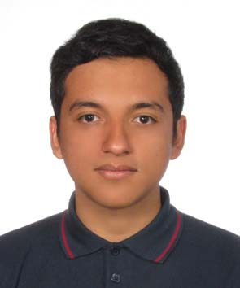

Erick Galvan
Summary
Dedicated and capable polyglot, teacher, translator, and aspiring programmer.
Education
- 2017, BA in Foreign Languages with a major in Logistics from Madero University.
Work Experience
- 2022 - Today | Head Teacher at Worldwise | Yamanashi, Japan.
- 2020 - 2022 | English Teacher at Worldwise | Yamanashi, Japan.
- 2017 - 2019 | Language Teacher at Germania Idiomas | Puebla, Mexico.
Skills
- Professional proficiency in English, Spanish, Japanese, German, and French.
- Limited professional proficiency in Italian and Mandarin.
- Intermediate proficiency in Python
- Limited proficiency in HTML
- Team managent and knowledge of SCRUM
- Event Planning
Certifications
- ÖSD C1 (Advanced German)
- JLPT N1 (Advanced Japanese)
- HSK 4 (Intermediate Mandarin)
About me
Contact